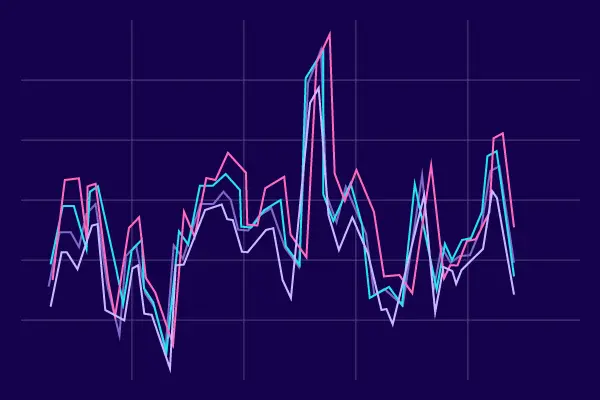

In mathematics, a time series is a series of data points indexed (or listed or graphed) in time order.
Most commonly, a time series is a sequence taken at successive equally spaced points in time.
Thus, it is a sequence of discrete-time data. Examples of time series are heights of ocean tides, counts of sunspots,
and the daily closing value of the Dow Jones Industrial Average.

A time series is very frequently plotted via a run chart (which is a temporal line chart).
Time series are used in statistics, signal processing, pattern recognition, econometrics, mathematical finance,
weather forecasting, earthquake prediction, electroencephalography, control engineering, astronomy,
communications engineering, and largely in any domain of applied science and engineering
which involves temporal measurements.
This project aims to visualize some dimensionality reduction algorithms used in time-series data analysis.
Time-series data usually has high dimensionality, and we want to reduce the dimensionality
so that we can extract the key features of the data.
Dimensionality reduction also reduces the storage space required for data because it helps in data compression
and plays a significant role data preprocessing phase.